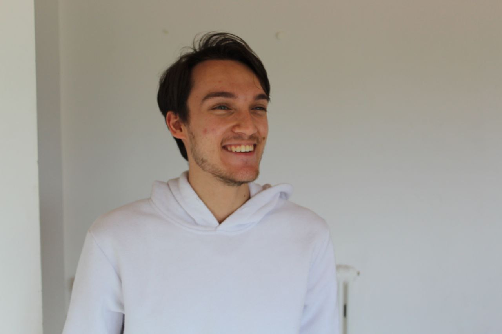

Mini Doc
▶
Design and visual storytelling for those brave enough to slow down.
I work with artisan realities, fine agricultural businesses, and ethical brands — far from the frantic, manipulative logic of social algorithms, to build stories that last.

I come from a hybrid path. I studied Computer Science for Digital Communication and, in parallel, cultivated directing and visual storytelling. Two worlds that seem distant but that, to me, speak the same language: building something moving, with method.
At one point I made an ethical choice: I left “fast-food” editing behind.
No more frantic cuts designed only to hold the gaze one second longer. I chose Slow Media: stories built with time and care, that respect both those who watch and those who commission them. I don't believe in communication that shouts — but in the kind that stays.
I spend time where things actually happen — the workshop, the field, the hands at work. From there comes a faithful visual story that lets people feel the real value of what you do.
Short documentary · Business portraitVisual stories that go deep. From field research to final editing, I build narratives meant to last — not to expire with the algorithm.
Narrative · DocumentaryI define the language a brand uses to show itself to the world: tone, rhythm, image. A coherent direction that builds recognition over time, not a fleeting spike.
Creative direction · BrandI help businesses and professionals communicate with honesty, without chasing vanity metrics. A strategy that puts people at the center, not algorithms.
Strategy · Slow MediaGiving shape to dreams, without chasing trends.
A clothing brand that rejected the logic of fast-fashion and throwaway content, looking for a voice that wouldn't shout.
We built “Prompt to Human”: not algorithms, but real people who listen and turn a vision into a unique piece. A slow, coherent, recognizable visual language — between grit and lightness.
An identity people remember, not just scroll past. Consistency before virality.
Avv. Oreste Maria Petrillo
Law, explained with respect.
A legal professional who wanted to be understood by real people, without the distance of technical language.
Content that answers real questions — clear Reels and carousels — with no clickbait or inflated promises. Authority born of clarity, not clamor.
An accessible digital authority that builds trust instead of distance.
Code in service of care
Technology as an artisan's tool, not a shortcut.
My background in computer science isn't about producing more, faster. It's about building tailored tools that remove the noise and leave room for what matters: the story.
SmartSubs is my flagship project: a DaVinci Resolve plugin that automates the most mechanical part of subtitling, giving time back to creative work. Clean code, built to solve real problems.
Discover SmartSubs ↗


Before filming, I understand. Slow, deep time with the person in front of me, to grasp what makes their story unique.
I go into the field. The story is born from real places and real people, not from a pre-packaged script.
I edit stories that last. Every choice serves the meaning, not the metric of the moment.